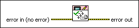
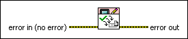

FBWF Commit All VI
Owning Palette: File-Based Write Filter VIs
Requires: Application Builder or Professional System
Commits all changes in the cache.

 Add to the block diagram Add to the block diagram |
 Find on the palette Find on the palette |
Owning Palette: File-Based Write Filter VIs
Requires: Application Builder or Professional System
Commits all changes in the cache.

| Add to the block diagram |
Find on the palette |
 |
error in describes error conditions that occur before this node runs. This input provides standard error in functionality. |
 |
error out contains error information. This output provides standard error out functionality. |
Refer to the Windows Embedded Enabling Features.lvproj in the labview\examples\TouchPanel\Windows Embedded Enabling Features directory for an example of using the FBWF Commit All VI.
 Open example Find related examples
Open example Find related examples